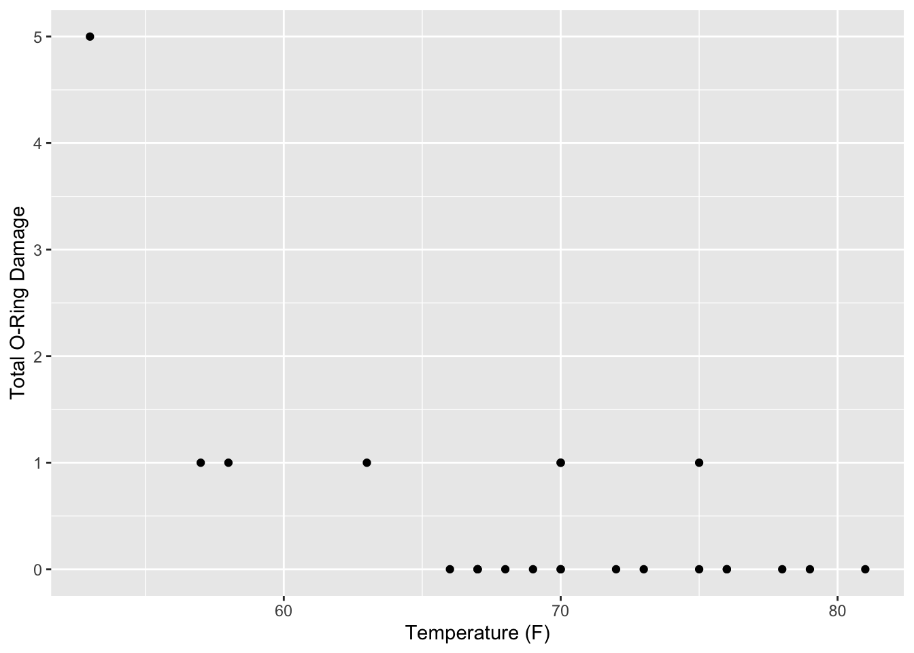
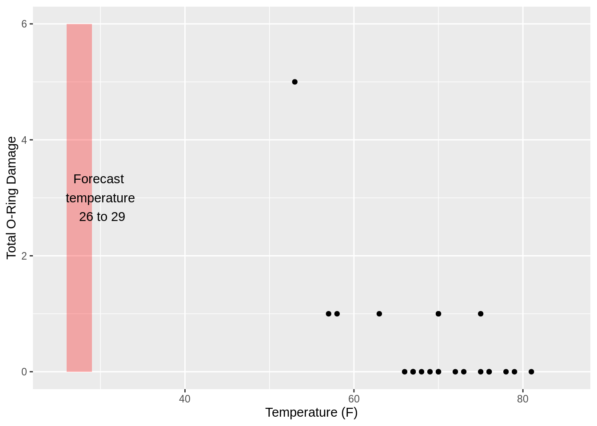

A case study on turning data into information
This short case study is an example of what it means to turn “data” into “information”. In this example, we’ll be examining data about the relationship between the temperature of different NASA rocket launches and damage to the rock O-rings - the root cause of the 1986 Space Shuttle Challenger explosion.
Don’t worry yet if you don’t understand the specific code here - just try to follow along to see how we can pull out information from raw data.
The Challenger disaster
On January 28, 1986 the space shuttle Challenger exploded. In his book titled “Visual Explanations”, Edward Tufte (1997) provides a detailed account of the background to the incident. In short, the temperature on the day of the launch was too low and resulted in failure of the O-rings in the rocket, which led to an explosion that destroyed the rocket and killed the 7-person crew, pictured below.
 [
[The data
The R package DAAG has a dataset called orings which contains data on temperatures and O-ring damage during launches prior to the Challenger incident. Let’s load the DAAG library and preview the data:
library(DAAG)## Loading required package: latticehead(orings)## Temperature Erosion Blowby Total
## 1 53 3 2 5
## 2 57 1 0 1
## 3 58 1 0 1
## 4 63 1 0 1
## 5 66 0 0 0
## 6 67 0 0 0We can see that the dataset contains observations about the temperatures of launches and O-ring damage, but we don’t yet have information. One step forward towards information is to simply plot the data to see if there might be a relationship between temperature and O-ring damage:
library(ggplot2)
plot <- ggplot(orings, aes(x=Temperature, y=Total)) +
geom_point() +
labs(x = 'Temperature (F)', y = 'Total O-Ring Damage')
plot
The graph above shows O-ring damage on the y-axis and temperature on the x-axis. We can easily see that no prior launches below 66 degrees F were damage-free, and it appears that at lower temperatures (such as 55 degrees) the damage was even more severe.
Now, what temperature was forecasted for the day of the Challenger launch? 26 to 29 degrees. Let’s add that context to our plot:
plot +
# Modify the x and y limits
xlim(25, 85) +
ylim(0, 6) +
# Add a red rectangle for the forecasted temperature on launch day
annotate("rect", xmin = 26, xmax = 29, ymin=0, ymax=6,
alpha = 0.3, fill = "red") +
# Add text
annotate("text", x = 30, y = 3,
label = "Forecast \n temperature \n 26 to 29")
Now we have some information. The transformation of the raw data into a visualization makes it obvious that the temperature forecasted for the day of the Challenger launch should raise red flags. It falls far below the temperature range of prior launches, and those prior launches suggest that O-ring damage may be correlated with decreasing temperature.
To their credit, the engineers working on the Challenger were worried about the potential for O-ring failure. But the critical step in making the link to temperature was not thoroughly communicated. Instead, the raw data was presented in tabular form along with diagrams like the one below, which show how erosion in the primary O-ring interacted with the secondary O-ring:
 [
[While the above diagram contains a lot of data, the critical information about the relationship between launch temperature and O-ring damage is not obvious. In contrast, the scatterplot achieves this without putting much cognitive load on the viewer. Just about anyone can look at that plot and understand that the forecasted temperature on January 28, 1986 might be a risk for O-ring failure.
References:
- The Space shuttle Challenger explosion blog post, by Vikram Dayal
- Robison et al. (2002) Representation and Misrepresentation: Tufte and the Morton Thiokol Engineers on the Challenger, Science and Engineering Ethics, 8, 59-81.
- Tufte, Edward R. (1997) “Visual Explanations: Images and Quantities, Evidence and Narrative”, Graphics Press, Cheshire, Connecticut.
George Washington University | School of Engineering & Applied Science
Dr. John Paul Helveston | jph@gwu.edu | Mondays | 6:10–8:40 PM | Phillips Hall 108 | |
This work is licensed under a Creative Commons Attribution 4.0 International License.
See the licensing page for more details about copyright information.
Content 2019 John Paul Helveston